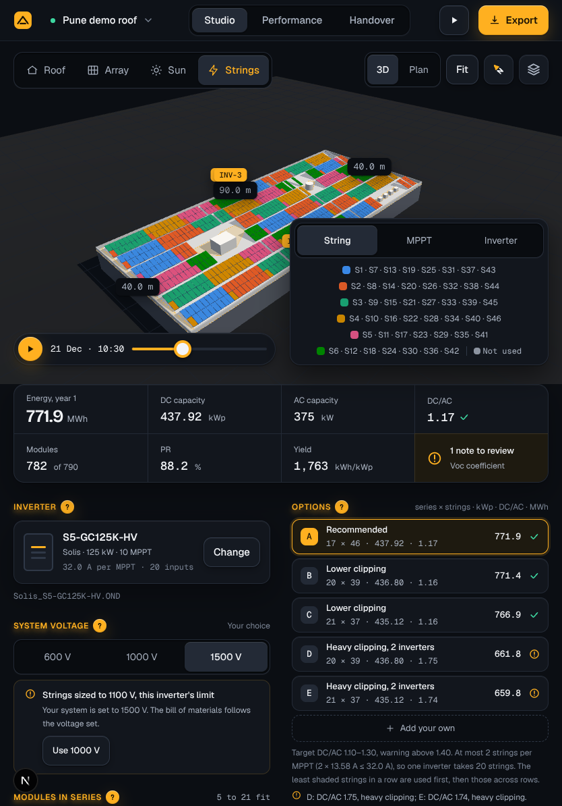
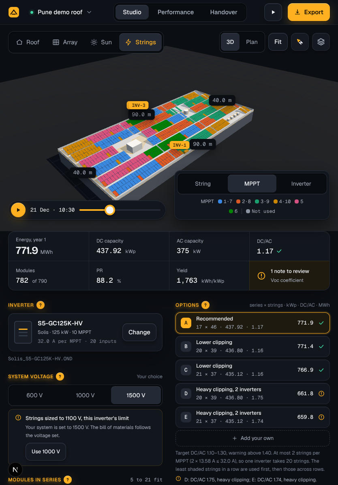
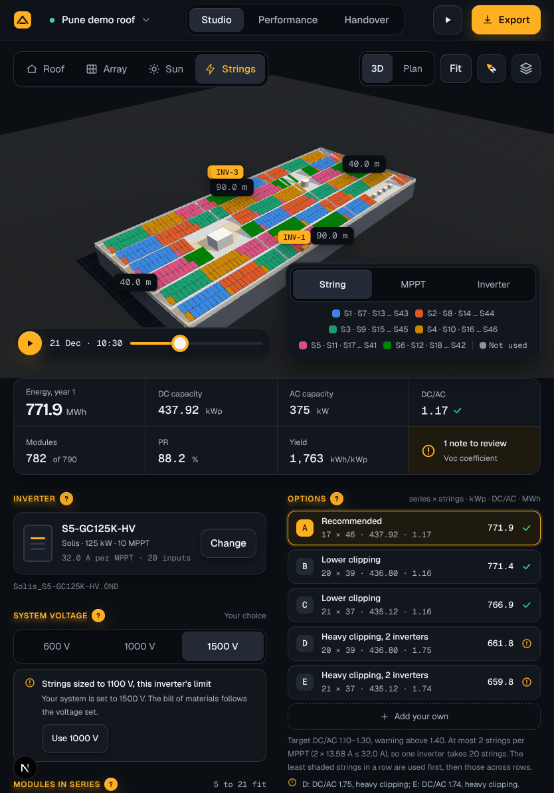
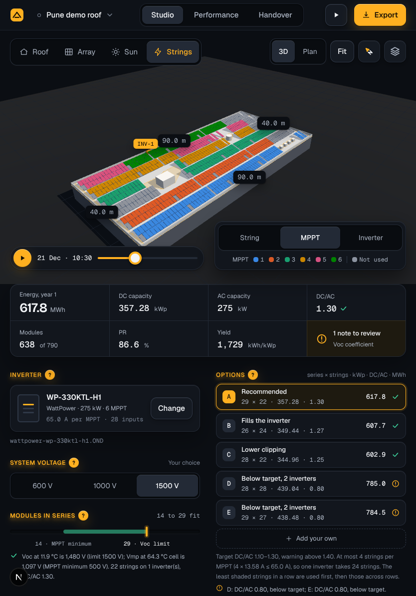
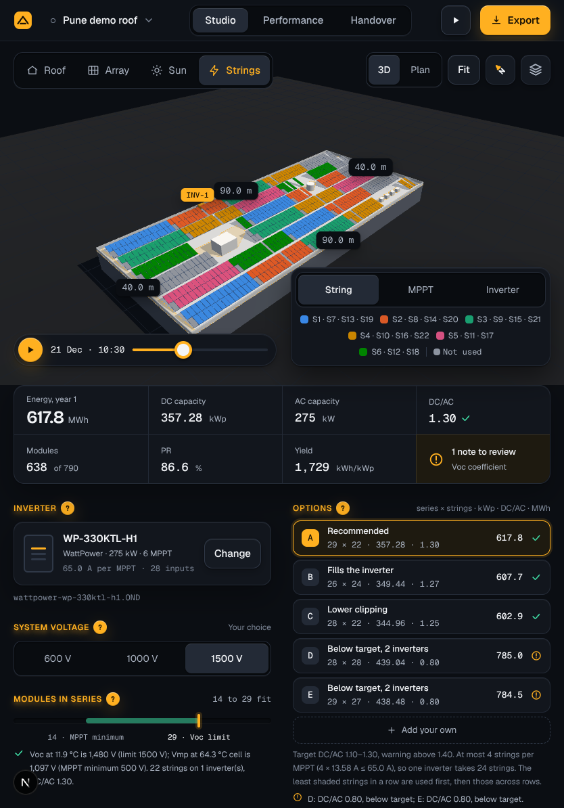

The series has six colours, so from the seventh MPPT, string or inverter the colours come round again: MPPT 7 is MPPT 1's blue. Today the legend still names each one, so with an inverter of 10 MPPT (Solis S5-GC125K-HV, three inverters on the demo roof) it runs under the inspector on desktop, and by string, 46 strings, it runs off the stage on desktop and covers the stage on phone. Proposed: one entry per colour, never more than six and Not used, each naming all that colour marks, as By string already does: MPPT 1 · 7, MPPT 2 · 8, … MPPT 6. A colour that marks more than four shows the first three, an ellipsis and the last: S1 · S7 · S13 … S43. A screen reader hears every one.
Where room is short (tablet, phone) the numbers of a colour stand close, 1·7, and the rule and Not used keep to the line of the last colour. The legend wraps within the stage if it still does not fit. The library's 15 MPPT give at most three to a colour (MPPT 1 · 7 · 13). Which of two MPPTs of one colour a string is on: its trace and its callout say, as by string today. Up to six, the legend is as approved. Tablet: the card at the stage's bottom right, the switch over the legend.




